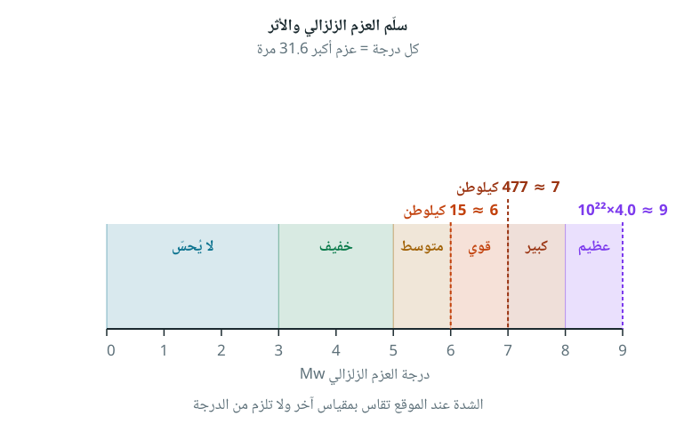

مقياس العزم الزلزالي
Moment magnitude scale
مقياس لوغاريتمي لحجم الزلزال مشتق من عزمه الزلزالي M0 = μAD؛ كل درجة تعني عزما أكبر 31.6 مرة وطاقة مرسلة أكبر نحو 32 مرة، فلا يشبع عند الزلازل العظيمة.
مقياس العزم الزلزالي يقيس حجم الزلزال بعزمه الزلزالي لا بسعة اهتزاز جهاز معيّن. العزم حاصل ضرب صلابة الصخر في مساحة الصدع المنزلق في مقدار الإزاحة: M0 = μ·A·D. هذا التعريف يجعله صالحًا لكل الأحجام ولا يشبع عند الزلازل العظيمة كما شبعت المقاييس السابقة المبنية على سعة التسجيل.
السلم لوغاريتمي: زيادة درجة واحدة تعني عزمًا أكبر 31.6 مرة، وطاقة مرسلة أكبر نحو 32 مرة. لذلك يكون الفرق بين 6 و7 ضعفًا وثلاثين في الطاقة لا «درجة أقوى». القياس يستند إلى تسجيلات الشبكات الزلزالية عند ترددات منخفضة، أي عند أطوال موجية أكبر من أبعاد الصدع.
كيف تعمل الظاهرة؟
الصدع ينزلق عندما يتجاوز الإجهاد المؤثر مقاومة الاحتكاك، فتنفلت طاقة الإجهاد المخزونة على مساحة A بإزاحة متوسطة D. الجزء المرسل موجات زلزالية يُقاس ويقدر بنحو 5% من الطاقة الكلية، والباقي يتحول حرارةً وتشويهًا. العزم يُستخرج من طيف الموجات: الإزاحة الطيفية عند الترددات المنخفضة تتناسب مع M0، ويُثبَّت ذلك عبر متطلبات السقوط الطيفي للترددات العالية. من M0 تُحسب الدرجة بتعريف كاناموري: Mw = (2/3)(log₁₀M0 − 9.1) بوحدة نيوتن·متر، أي ما يعادل (2/3)log₁₀M0 − 6.07.
العلاقة بالأرقام
لزلزال بدرجة 7: log₁₀M0 = 1.5 × (7 + 6.07) = 19.6 ومنه M0 = 4.0×10¹⁹ نيوتن·متر، وهو عزم يكافئ صدعًا بمساحة 100 كم² وإزاحة متر عند صلابة 30 غيغاباسكال. الطاقة المرسلة E = 10^(1.5M + 4.8) فتعطي 2.0×10¹⁵ جول، أي ما يقارب 477 كيلوطن من مادة TNT. ودرجة 9 ترفع العزم إلى 4.0×10²² والطاقة إلى 2.0×10¹⁸ جول، أي ألف مرة طاقة الدرجة 7. والفارق بين درجتين متتاليتين في الطاقة 31.6 مرة لأن 10^1.5 هو هذا المقدار.
مفاهيم متقاربة
الخلط الأول: العزم الزلزالي ليس الشدة الزلزالية؛ الأول يعبّر عن انطلاق طاقة عند المصدر، والثاني عن الأثر عند موقع ويتغير بالمسافة والتربة. الثاني: هو ليس مقياس ريشتر؛ الأخير يعتمد على لوغاريتم سعة تسجيل جهاز وود–أندرسون ويشبع فوق 7 تقريبًا. الثالث: الطاقة ليست خطّية في الدرجة، فالفرق الظاهر بدرجة واحدة يخفي عامل 31.6. الرابع: العزم ليس الإزاحة؛ الإزاحة مضروبة في المساحة والصلابة، فزلزال بمساحة أكبر وإزاحة أقل قد يعطي عزما أكبر.
حدود التطبيق
المقياس لا يفيد تحت نحو 3.5 لأن الإشارة الصغيرة لا تُظهر الجزء المسطّح من الطيف، فتُستعمل مقاييس محلية بدلًا منه. في الزلازل البطيئة قد يكون العزم مقيسًا بينما انطلاق الطاقة أقل بكثير، فتقل الدرجة عن حجم الانزلاق. تقدير المساحة والإزاحة من الانعكاس يخضع لعدم يقين بعوامل من رتبة، خاصة في الصدوع المتشعبة. وتحويل العزم إلى طاقة يفترض نسبة إرسال ثابتة لا تنطبق على كل الأعماق وأنواع الصدوع.

| الكمية | القيمة | المصدر |
|---|---|---|
| نسبة العزم بين درجتين متتاليتين | 31.6 مرة | [1] |
| العزم الزلزالي لزلزال بدرجة 7 | 4.0×10¹⁹ نيوتن·متر | [1] |
| الطاقة المرسلة لزلزال بدرجة 7 | 477 كيلوطن TNT | [1] |
| الطاقة المرسلة لزلزال بدرجة 9 | 2.0×10¹⁸ جول | [2] |
المصادر
- 1 Earthquake Magnitude, Energy Release, and Shaking Intensity — U.S. Geological Survey — Earthquake Hazards Program. www.usgs.gov/programs/earthquake-hazards/earthquake-magnitude-energy-release-and-shaking-intensity · اطُّلع عليه 2026-11-16
- 2 The Science of Earthquakes — U.S. Geological Survey — Earthquake Hazards Program. www.usgs.gov/programs/earthquake-hazards/science-earthquakes · اطُّلع عليه 2026-11-16
استشهد بهذا المصطلح
الصيغتان مبنيتان من بيانات الصفحة نفسها: العنوان والتاريخ ورابط النسخة المنشورة.
مقياس العزم الزلزالي — Moment magnitude scale. (2026). ديوان المعرفة — انفراد. https://infiradev.com/diwan/terms/seismic-magnitude.html
@misc{seismic-magnitude2026,
title = {مقياس العزم الزلزالي},
titleaddon = {Moment magnitude scale},
howpublished = {{ديوان المعرفة — انفراد} — مرجع علمي عربي},
year = {2026},
url = {https://infiradev.com/diwan/terms/seismic-magnitude.html},
urldate = {2026-11-16},
note = {مراجعة علمية: مراجعة آلية — ديوان المعرفة (روابط المصادر + عقد المحتوى + وجود الرسم) 2026-11-16}
}
راجعه: مراجعة آلية — ديوان المعرفة (روابط المصادر + عقد المحتوى + وجود الرسم) 2026-11-16 · 2026-11-16 · آخر تحديث 2026-11-16